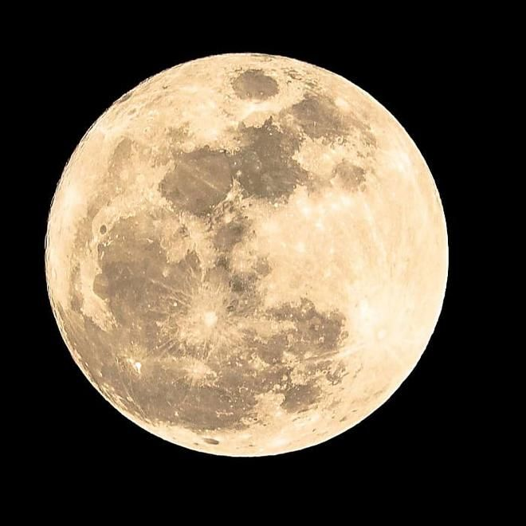

القمر
القمر هو التابع الطبيعي الوحيد للأرض. يبلغ قطره حوالي 3,474 كيلومترًا ويعتبر خامس أكبر قمر في النظام الشمسي. القمر له تأثير كبير على الحياة على الأرض، خاصةً في المد والجزر. يُعتقد أن القمر تشكل بعد اصطدام جسم بحجم المريخ بالأرض منذ حوالي 4.5 مليار سنة.
